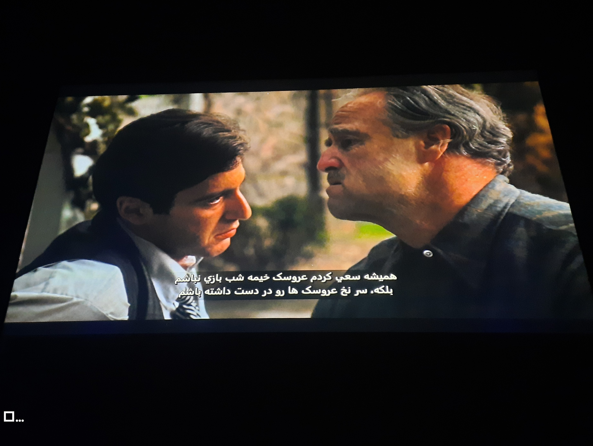
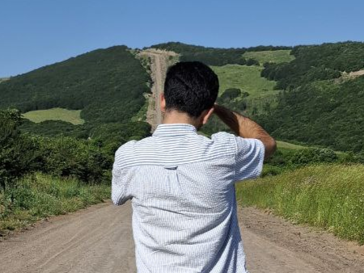
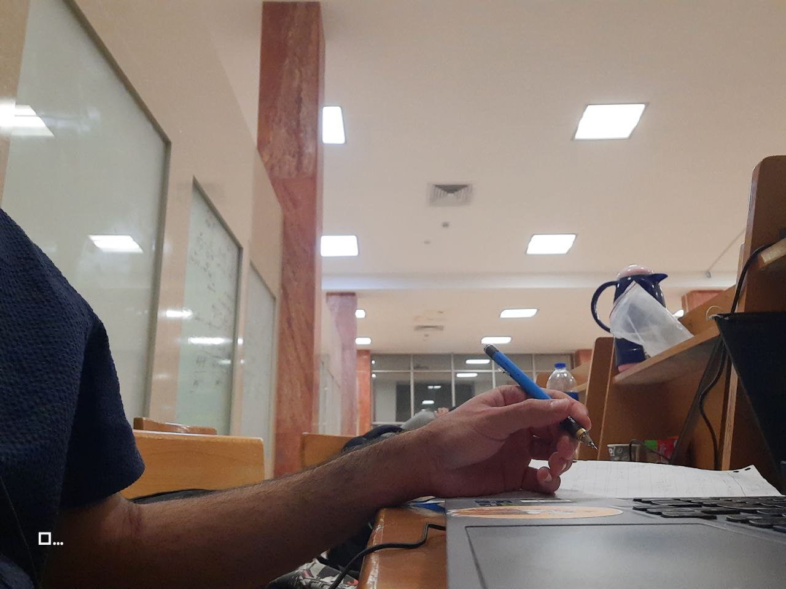
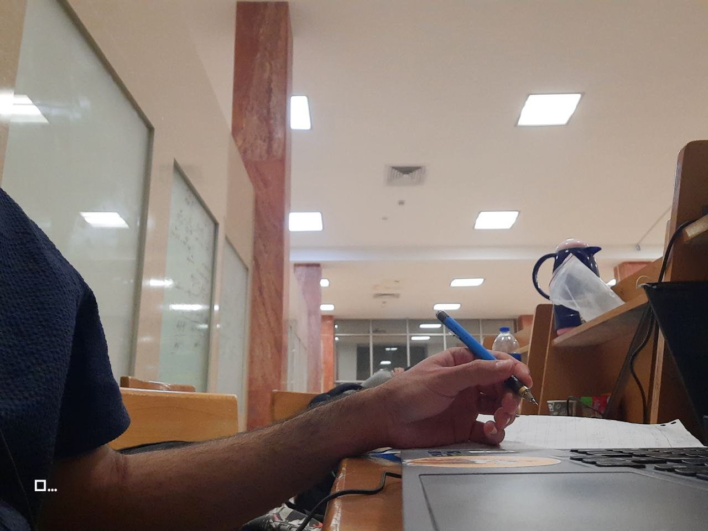
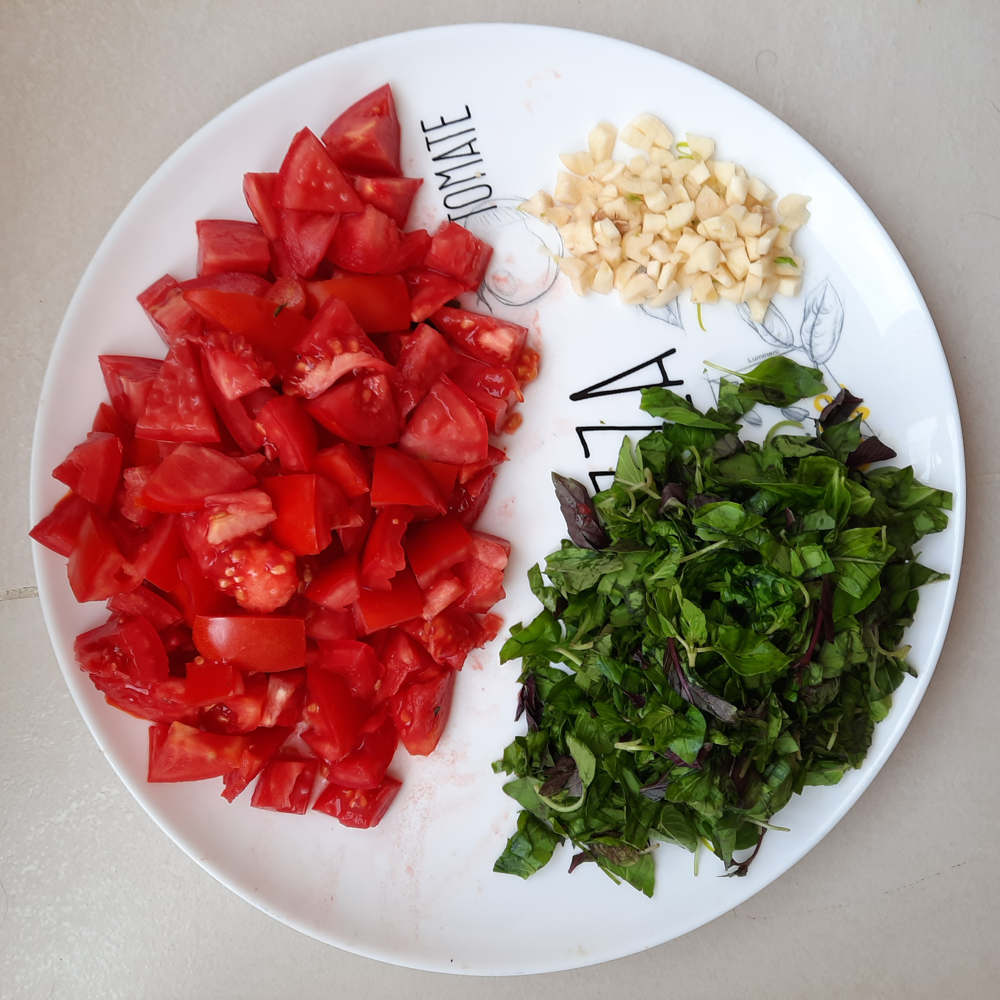
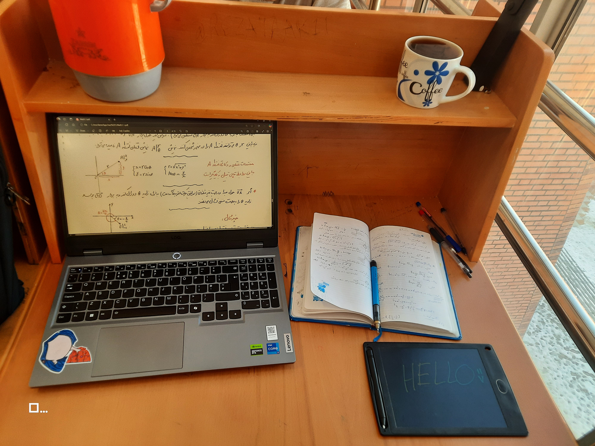
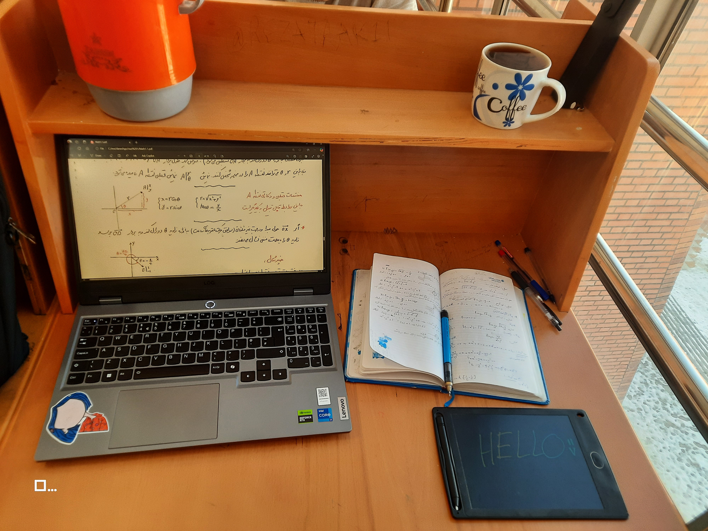

A Brief Lookout
I'm a student at
UMA
(University of Mohaghegh Ardabili).
This is my second semester. I was born in Mehr, 19 years old I am.
For this semester, we have to create a personal website to introduce ourselves. So here it is.
I hope you enjoy it.
What I Love
Leaving a trace of yourself is one of the most meaningful things in this world.
Planting a tree, raising a child, or building a website like this. these things are priceless.
I enjoy everything related to art.
I believe there's so much passion and creativity in it. it's full of life.
-
Cinema:
The art of portraying lives in a beautiful and meaningful way is something I deeply appreciate.
  -
Writing:
Reading and listening to any kind of piece of writing resonates with me deeply.
I think stories are more than just words. you can rely on them whenever you need comfort. 

-
Cooking:
cooking is awesome!

What I've Done These 2 Semesters
Being on your own, far from home, can be a bit hard to bear. When I first entered university, I was uncertain about everything and overwhelmed.

After a while, I made some good friends — people with beautiful hearts and minds who helped me through this adventure. I feel lucky to know so many kind people that it's hard to choose just two pictures.
.jpg "friends")
.jpg "friends")
When exams came, we all became bookworms. I was fascinated when I first saw original references like Halliday and Thomas. I spent most of my time in the library when I didn’t have classes.
 
